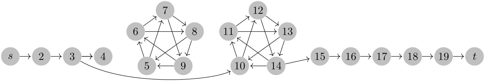

The TikZ and PGF Packages
Manual for version 3.1.9a
Part X The System Layer
by Till Tantau
This part describes the low-level interface of pgf, called the system layer. This interface provides a complete abstraction of the internals of the underlying drivers.
Unless you intend to port pgf to another driver or unless you intend to write your own optimized frontend, you need not read this part.
In the following it is assumed that you are familiar with the basic workings of the graphics package and that you know what TeX-drivers are and how they work.

\begin{tikzpicture}
[shorten >=1pt,->,
vertex/.style={circle,fill=black!25,minimum size=17pt,inner sep=0pt}]
\foreach \name/\x in
{s/1, 2/2, 3/3, 4/4, 15/11, 16/12, 17/13, 18/14, 19/15, t/16}
\node[vertex] (G-\name) at
(\x,0) {$\name$};
\foreach \name/\angle/\text in
{P-1/234/5, P-2/162/6, P-3/90/7, P-4/18/8, P-5/-54/9}
\node[vertex,xshift=6cm,yshift=.5cm] (\name) at
(\angle:1cm) {$\text$};
\foreach \name/\angle/\text in
{Q-1/234/10, Q-2/162/11, Q-3/90/12, Q-4/18/13, Q-5/-54/14}
\node[vertex,xshift=9cm,yshift=.5cm] (\name) at
(\angle:1cm) {$\text$};
\foreach \from/\to in
{s/2,2/3,3/4,3/4,15/16,16/17,17/18,18/19,19/t}
\draw (G-\from) --
(G-\to);
\foreach \from/\to in
{1/2,2/3,3/4,4/5,5/1,1/3,2/4,3/5,4/1,5/2}
{ \draw (P-\from) --
(P-\to); \draw (Q-\from) --
(Q-\to); }
\draw (G-3) .. controls
+(-30:2cm) and
+(-150:1cm) .. (Q-1);
\draw (Q-5) --
(G-15);
\end{tikzpicture}